Gracias por todo <3
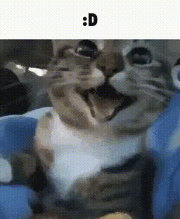
Quiero que sepas que siempre estaré aquí para ti, aunque no hablemos.
Si algún día decides volver a hablar, jugar o hacer cualquier otra cosa, estaré siempre disponible
Ahora, he decidido dedicarte esta pagína a ti 💕, a lo largo de esta página verás varias cosas sobre ti y
nosotros en general, como esta imagen de un gato, porque sé que te gustan los gatos y me recuerda a ti cada vez que veo uno xd
Banda sonora 🔥
hice una pequeñita playlist con canciones que me recuerdan a ti
espero que te guste y que te traiga buenos recuerdos de nosotros, son 9 cancioncitas, aquí te la dejo mediante
YouTube :3
entre otras cosas...
tiempo transcurrido desde que nos conocimos aproximadamente 😊
Cargando...
Este contador nos dice cuánto tiempo ha pasado desde que nos conocimos, ahora me doy cuenta de que fue
mas breve de lo que pensaba...
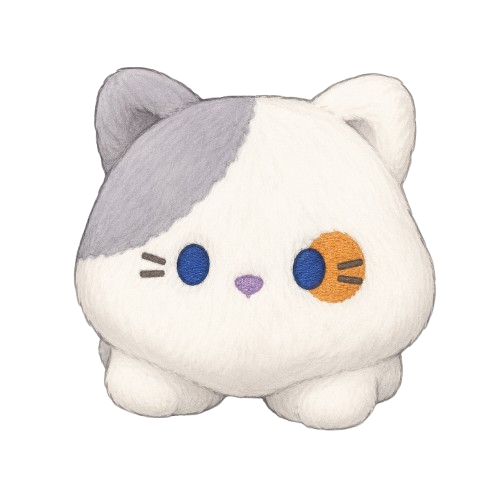
que puedo decir... El muñeco que me regalaste siempre me acompañará, de alguna forma me hace sentir que te tengo cerca.
Obviamente el pintacafé no iba a faltar, una salida muy linda la verdad, me dejé llevar por la ansiedad y la verdad no te hablé mucho ese día, pero me divertí y me gustó compartir ese momento contigo, espero que tú también lo hayas disfrutado c:
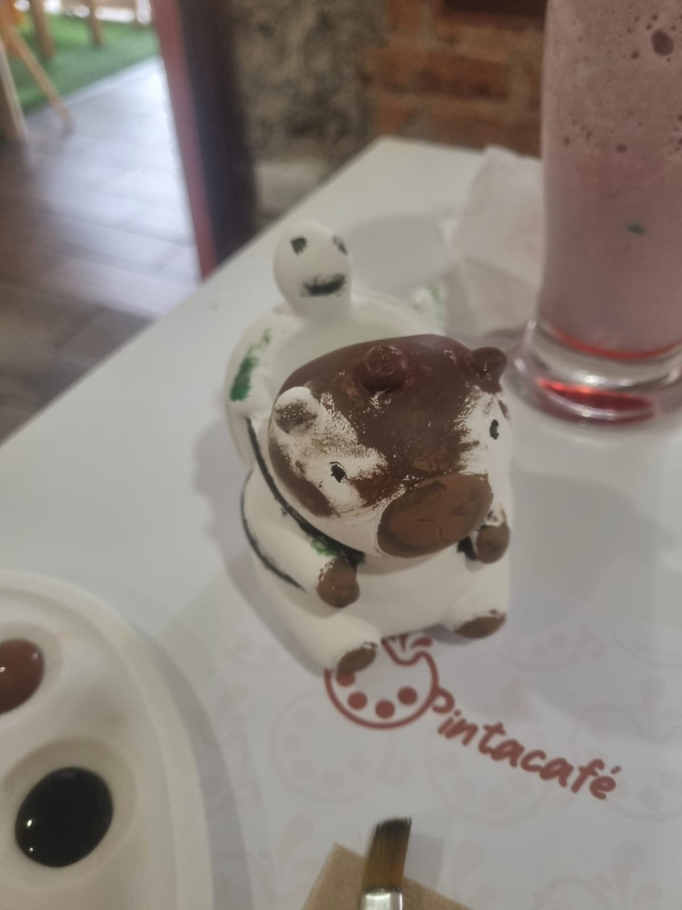
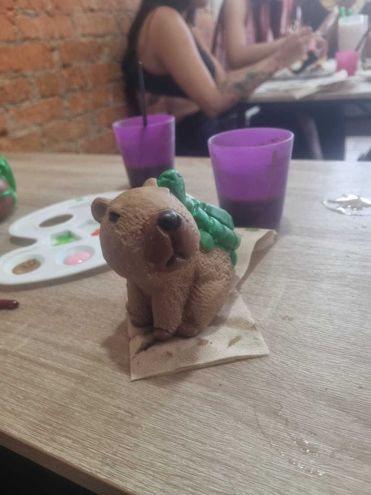
el capibara que ahora tengo yo xdd ahí puse un par de cositas
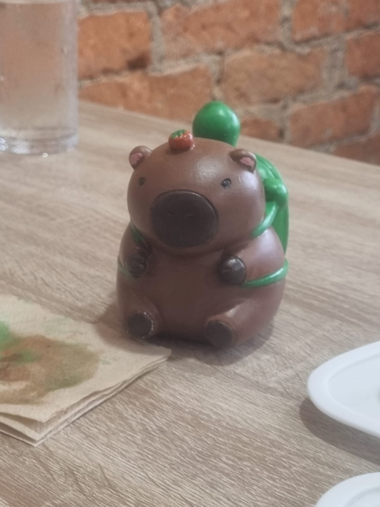
mira (post it, pinzas, maquinilla, y un cosito para el teclado que no se ve ahí):
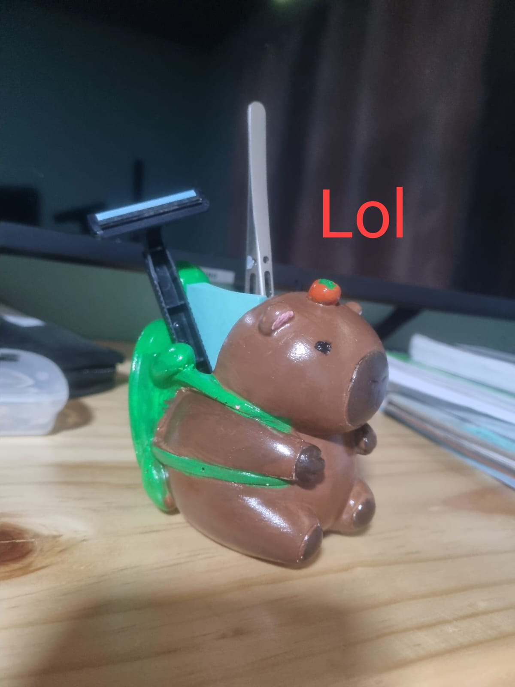
y mi gran obra de arte XD:
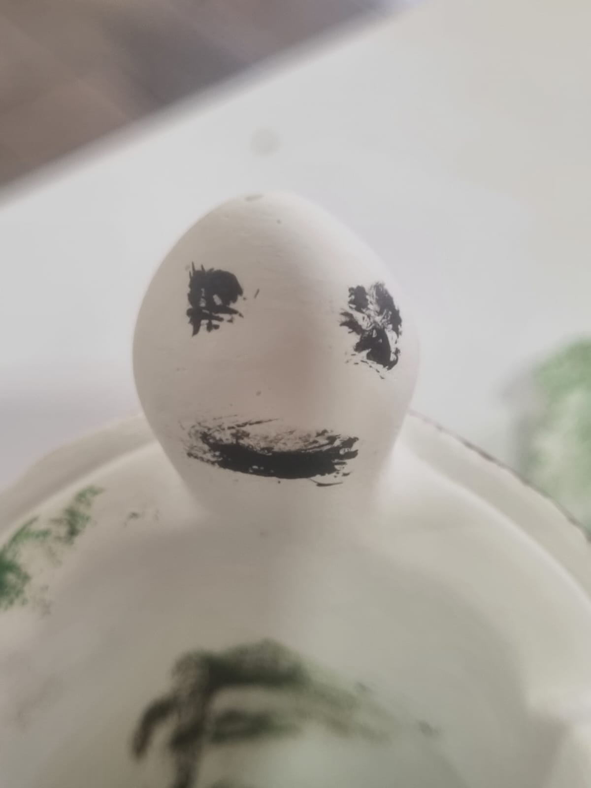
Lamentablemente no puedo poner fotos nuestras, pues nunca nos tomamos una juntos :/
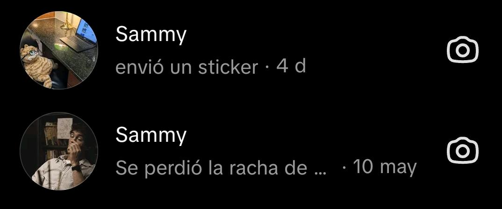
No que disque perdiste la cuenta? XDDD pues ya ni modo 😔
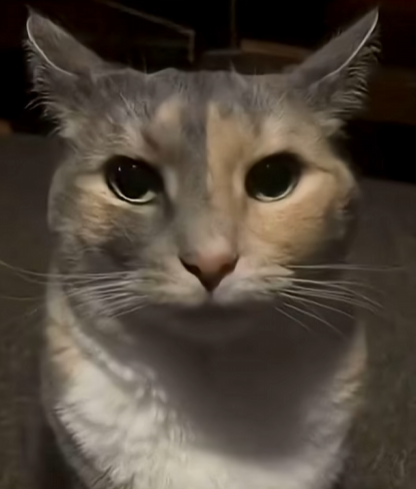
Pero bueno son cosas que pasan jajsajaj no importa xd
Ahora, algunas capturas de mensajes que me hicieron sentir maripositas en el estómago c:

Recuerdo la emoción que sentí al leer ese mensaje, estaba jugando con Luis Fortnite y ambos nos pusimos a celebrar XDDDDD

no puedo describir lo feliz que me fui a dormir luego de leer ese mensaje, lindísimo
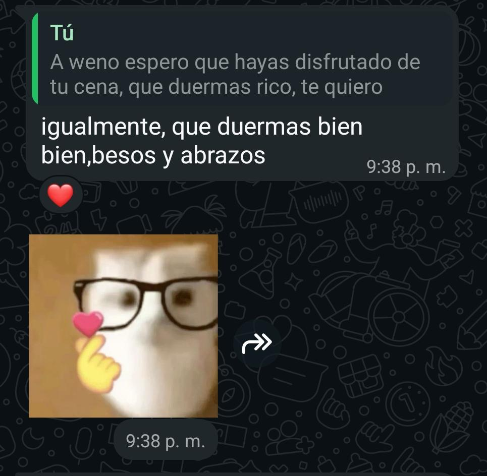
"Besos?, BESOS?", así fue mi reacción jajajsa

y este otro mensaje que me hizo sentir maripositas también, aunque fue el ultimo "te quiero" :/
Yo después de lo que me dijiste el viernes:
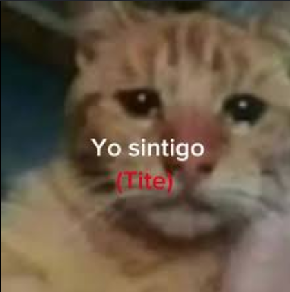
>
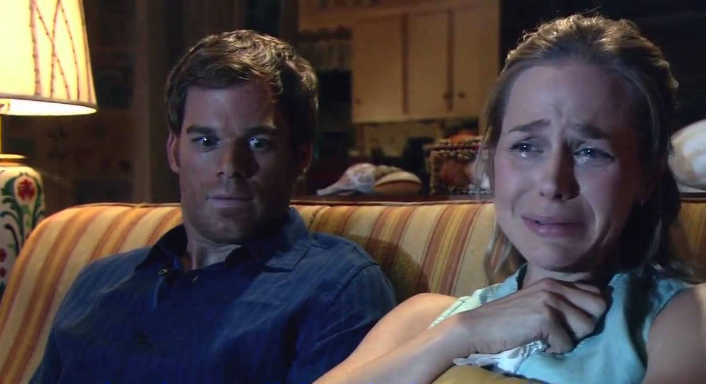
De alguna forma nosotros me recuerda a Dexter y Rita xdd
>
Ahora sí...
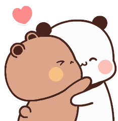
>Hasta acá dejaré la página por ahora, sinceramente quisiera poner más cosas antes de dártelo, pero no me dará el tiempo, periódicamente iré editando
esta página para agregar más cositas, así que puedes volver a visitarla de vez en cuando para ver si puse algo nuevo
(además, pondré en la página un aviso cuando definitivamente la haya terminado), o simplemente para recordar los buenos momentos que
pasamos juntos, por cierto, te conozco, sé que probablemente al ver esto se te venga a la cabeza la frase "el que mucho se despide
pocas ganas tiene de irse", no quiero que te preocupes, estoy bien, digo, obviamente estoy pasando por un duelo, porque perdí no solo una
potencial linda relación, sino que además perdí a mi única amiga (y la mejor de todas al chile w) y si te digo que estoy bien te mentiría, pero bueno son
adversidades de la vida, poco a poco volveré a estar bien supongo
Ahora sí que sí, me despido de ti 😔, espero que estés bien, te deseo lo mejor en la vida y ojalá tú también puedas encontrar a alguien
que te quiera muchísimo y que te haga sentir cálida, querida y feliz, como tú me hiciste sentir a mí durante el tiempo que estuvimos
hablando, gracias por darme la oportunidad de conocerte, nunca te olvidaré definitivamente, una broma acabó en esto, es increíble las
casualidades de la vida, seguramente toda la suerte de mi año se fue en conocerte XDD pero bueno, valió la pena, gracias por todo Keren,
te quiero, y espero que seas muy feliz <3
💬 ¿Quieres decir algo?
Si alguna vez quieres decir algo, dejar una opinión sobre la página, o simplemente saludar, puedes hacerlo aquí.